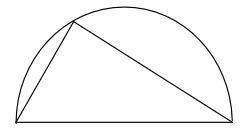
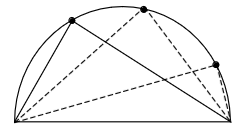
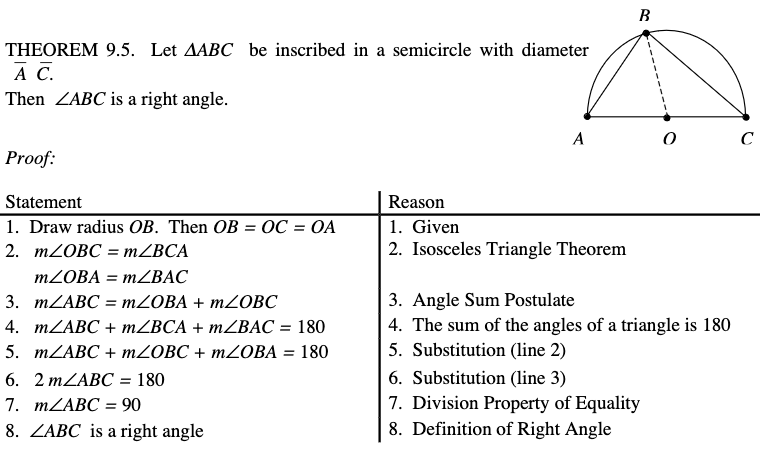
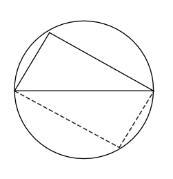
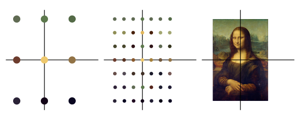
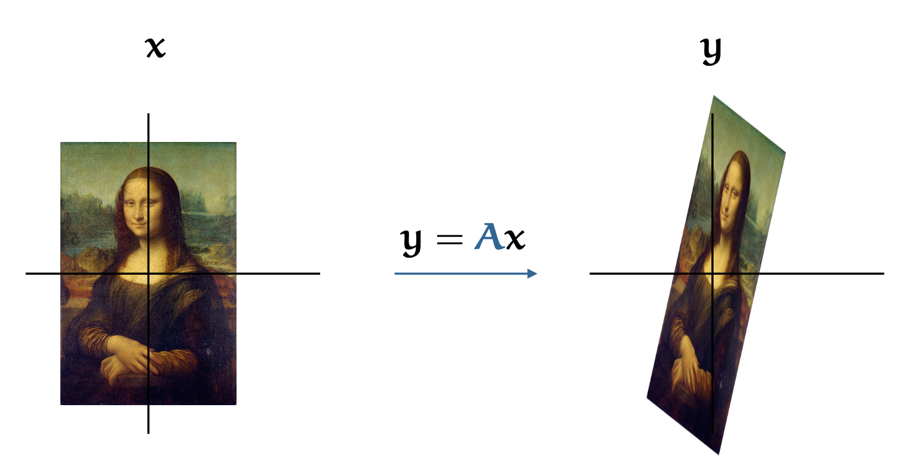
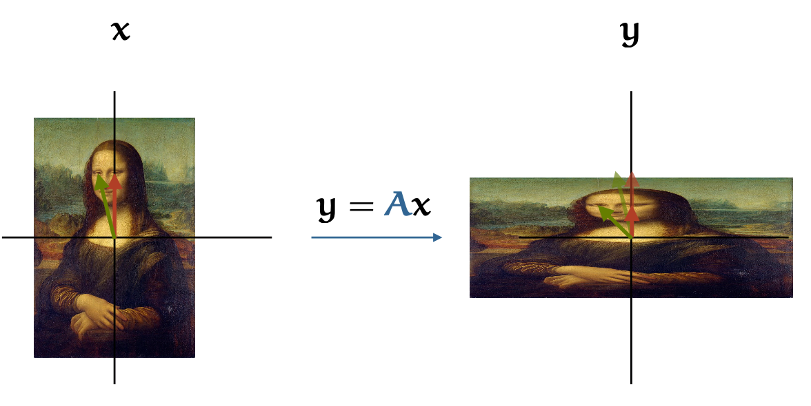

Intuition and Motivation
Out of everything I’ve read, one of the pieces that resonated most with me was Lockhart’s Lament. Lockhart, a mathematician, published this work around 20 years ago, critiquing the way mathematics is typically taught to students. The gist of his argument is that too much emphasis is placed on memorization, notation, formulae and dry proofs. Instead he argues we should teach students to appreciate mathematics first and foremost - which can later be followed by formalism. A brilliant example:
Lets take the case of a triangle inside a semicircleI felt his argument deeply. As a highschool student I was completely uninterested in “math”. University only reinforced this in me - studying for exams was an exercise in memorization combined with very basic stepwise logical reasoning. There was never any reason to do the math - it was just a constant that existed.

Now the beautiful truth about this pattern is that no matter where on the circle you place the tip of the triangle, it always forms a nice right angle. (…)

Here is a case where our intuition is somewhat in doubt. It’s not at all clear that this should be true; it even seems unlikely— shouldn’t the angle change if I move the tip? What we have here is a fantastic math problem! Is it true? If so, why is it true? What a great project! What a terrific opportunity to exercise one’s ingenuity and imagination! Of course no such opportunity is given to the students, whose curiosity and interest is immediately deflated by:

Could anything be more unattractive and inelegant? Could any argument be more obfuscatory and unreadable? This isn’t mathematics! A proof should be an epiphany from the Gods, not a coded message from the Pentagon (emphahsis added). This is what comes from a misplaced sense of logical rigor: ugliness. The spirit of the argument has been buried under a heap of confusing formalism. No mathematician works this way. No mathematician has ever worked this way. This is a complete and utter misunderstanding of the mathematical enterprise. Mathematics is not about erecting barriers between ourselves and our intuition, and making simple things complicated. Mathematics is about removing obstacles to our intuition, and keeping simple things simple. Compare this unappetizing mess of a proof with the following argument devised by one of my seventh-graders:
“Take the triangle and rotate it around so it makes a four- sided box inside the circle. Since the triangle got turned completely around, the sides of the box must be parallel, so it makes a parallelogram. But it can’t be a slanted box because both of its diagonals are diameters of the circle, so they’re equal, which means it must be an actual rectangle. That’s why the corner is always a right angle.”

(…) I was able to point out several stylistic and logical problems, and the student was then able to improve the argument. For instance, I wasn’t completely happy with the bit about both diagonals being diameters— I didn’t think that was entirely obvious— but that only meant there was more to think about and more understanding to be gained from the situation. And in fact the student was able to fill in this gap quite nicely:“Since the triangle got rotated halfway around the circle, the tip
must end up exactly opposite from where it started. That’s why
the diagonal of the box is a diameter.”
Fast forward a few years and I became interested in statistical learning. The ideas involved invite you to think intuitively. You can visualize what happens when you overfit a data set. You can intuit why your residuals should be normally distributed. You can think of gradient descent as traversing a 3D surface with local and global minima. Suddenly there was a reason to “do math”. Excited by this discovery, I decided to revisit everything I had learnt (and forgotten) at university. Armed with heaps of motivation, I bought the acclaimed “Linear Algebra Done Right”. A bulwark. A classic. Used by students all over the world. I slogged through the early chapters. It was rather dull, one definition after another. It is not difficult to follow the logic, and to see how one theorem follows from another. But the entire enterprise was draining and unfulfilling. It felt random. “Follow these steps and you get the result you are looking for. I can prove that it works because of the following …”. But why does it work? What possessed you to follow this path as opposed to any other? How might I have come up with this myself? The book provided no answers and I was left feeling deeply unsatisfied.
Fortunately, I stumbled across Unravelling Principal Component Analysis by Peter Bloem. Right from the get go it’s clear that this isn’t a textbook. This book is for:
People who have learned linear algebra and then forgotten it. Who feel a measure of regret that they didn’t pay full attention the first time around. If you’ve ever marveled at the magical results that PCA produces, and you’d like to really understand it, all the way down to the fundament, then this book will provide you with a guide. But perhaps it’s best to think of this as a guided tour of the forests of linear algebra.
This book is an opportunity to start afresh. At no point does it feel like reading an encyclopedia. Instead it is one big intuition building exercise. We learn why each step is necessary and are left feeling we could have come up with it ourselves.
Understanding First
Another gripe I have with math education is the order in which the material is presented. The typical textbook seems designed to confuse - leading with notation, discussing edge cases, and rarely pausing to explain. This book is structured differently. First each definition is patiently motivated, explained, then expanded upon, and finally followed by notation and formalization. The explanation of eigenvectors is a case in point:
The most common, and probably the most intuitive way to think about matrices is as transformations of points in space. If we have some vector x and we multiply it by a matrix A, we get a new point y = Ax. If A is square, then x and y are in the same space. A good way to visualize this is by domain coloring. We take a large number of points, arranged in a grid, and we color them by some image. This could be a simple color gradient, but we can also choose a photograph or some other image. Following Wikipedia’s example, we’ll use a picture of the Mona Lisa.After first giving us this intuitive, geometric (and color coded) explanation Peter takes us to the definition.
 An increasingly fine-grained domain coloring using the Mona Lisa.
If we apply the transformation A to each of these points, we can tell what effect the matrix has on this space.

All the points are mapped to a new position by A and poor Lisa ends up squished and stretched in various directions. Transformations expressible in a matrix are linear transformations. These are the transformations for which a line in the original image is still a line in the transformed image. This means that we can rotate, stretch, squish and flip the image in any direction we like, but we can’t warp, bend or tear it. In this language of transformation, we can very naturally define what eigenvectors are. The eigenvectors of a square matrix A are defined as those vectors (i.e. points in the image) for which the direction doesn’t change under transformation by A. It’s simplest to see what this looks like for a diagonal matrix. For instance in the transformation
the matrix acts independently on the first and second dimensions, squishing one, and stretching the other.

In this image we’ve also drawn two vectors: one to the middle of Mona Lisa’s left eye, and one to middle of the right. Since Leonardo put the right eye dead center in the painting (not by accident, I imagine), the red vector shrinks, but doesn’t change direction. The green vector is affected by both the squishing and the stretching, so its direction and magnitude both change. Hence, the red vector is an eigenvector, and the green vector isn’t. In a diagonal matrix, the eigenvectors are always the vectors that point in the same directions as the axes, so they’re easy to identify. In general square matrices, finding the eigenvectors is more tricky.
Formally, a vector v is an eigenvector of A if the following holds for some scalar λ:and assures us:Av = λv
This is just a symbolic version of what we said in words above: if v is an eigenvector of A, then transforming it changes its magnitude but not its direction, which is the same as saying we can multiply it by a scalar instead of by a matrix. The scalar corresponding to the eigenvector, in this case λ is called an eigenvalue of the matrix.
It’s not at all clear from the definition why these vectors should be meaningful or special. For now, just trust me that eigenvectors are worth knowing about.This is what I love about his style. Commonly we would start by reading a list of rules, likely irrelevant to understanding the core of the concept. Mathematicians can’t refrain from interjecting. ”This only applies to finite fields and real numbers”. But why lead with that? The reader is still struggling to grasp the new concept. You are overloading their poor brain before they even have a chance to get started.
I believe this is partially what makes learning new math difficult - having to actively refresh what each definition in a statement means in order to understand the full statement. It takes time to build automaticity - instant, effortless understanding of a concept. When an author provides a number of definitions and rules and then immediately proceeds to build upon them he does the reader a disservice. It takes working with an idea, until the definitions and concepts become second nature. An author should strive to reduce the cognitive load on the reader. We know you are smart, you don’t have to prove it. Gently introduce the idea, keeping it to the bare minimum. Later you can write all the notation you want. Knock yourself out! Yes, I would like to know how we can prove it. Maybe I even care about the case where a vector is a zero vector, or where we are dealing with imaginary numbers. But not right now! Start with the explanation.
Review
Only the first 2 chapters actually deal with PCA. We start by examining the problem. Why do we need to reduce the dimensionality of our data? What is a principal component and why is it useful? Then we move on to understanding the basic process. How do we arrive at the solution, where do the principal components come from?
At this point you could stop and use the PCA implementation from your library in ignorant bliss. But that’s not actually what this book is about. It is a tour of linear algebra, hiding under the guise of PCA. If you stick with it you’ll be taken deeper. The spectral theorem, determinants and the singular value decomposition are all given the same treatment.
It isn’t perfect, and mathematicians will probably complain about rigor. I get it. In my opinion the dynamic runs as follows: Math is hard and requires a modicum of intelligence. This leads to a search for shortcuts to avoid the most difficult parts. So mathematicians are rightly suspect when someone comes along claiming to teach “subjective” or “intuitive” math without the rigor. In fact, any time you come across math without rigor and notation you would do well to ask why. But this book is not an attempt to avoid hard work. It’s here to satisfy your curiosity and that unease you feel when you don’t quite understand why something works as well as it does.
A feature of this style is that at times it can be a little hard to follow. It’s easy to follow a logical proof step by step and verify its validity. Due to the narrative style of this book it can sometimes be a little unclear exactly what is happening. But Peter acquits himself remarkably well in this regard. For the most part rereading a paragraph will be sufficient. There were however a number of times where despite rereading a section I still couldn’t make sense of it and was forced to find some other source to help me understand.
Conclusion
I’m pleased to have found this book, it’s been a game changer for me. A friend recommended his blog to me when I was looking for explanations of the transformer architecture, which is how I found it. The full book is available on his blog as a free PDF, or you can buy it on amazon. Lockhart’s Lament is also a fun read and only around 25 pages. It is available here (PDF).